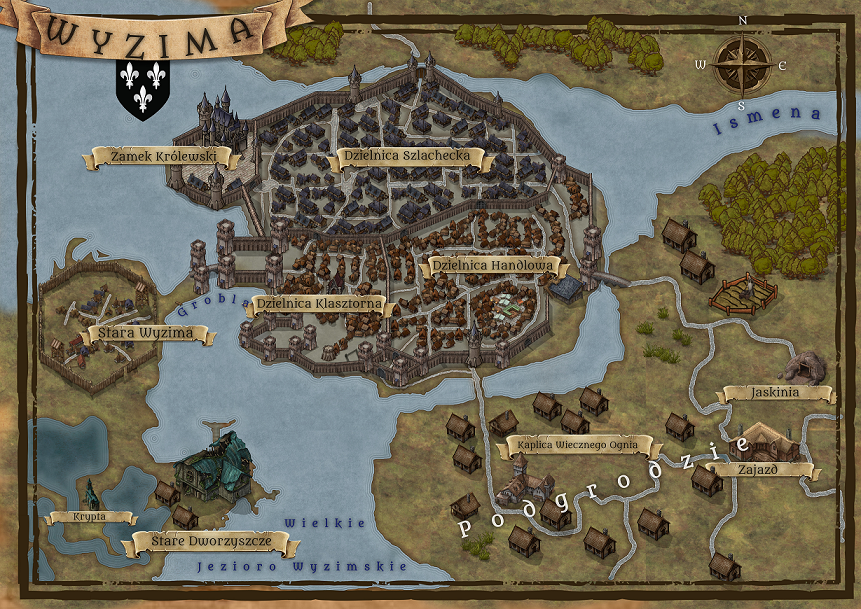
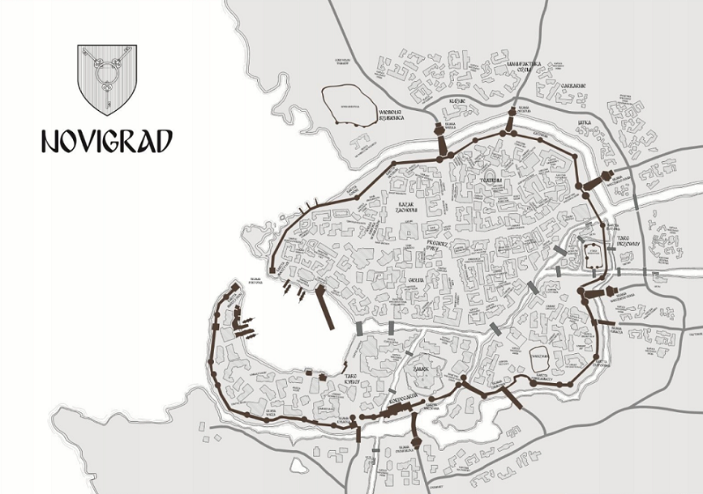
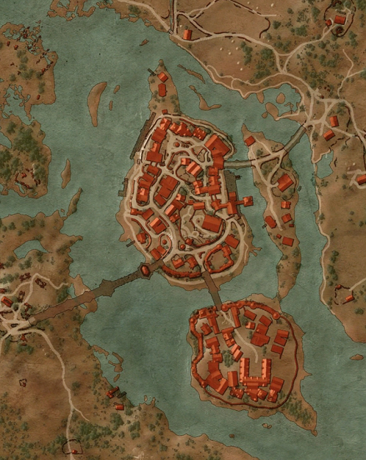
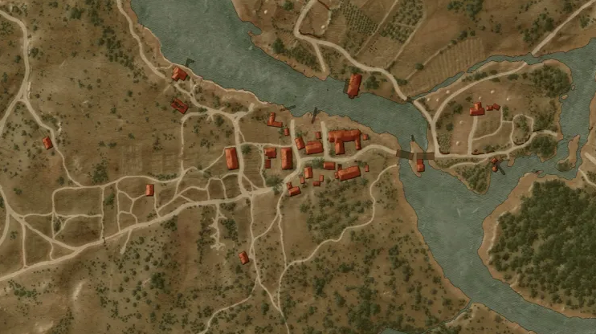
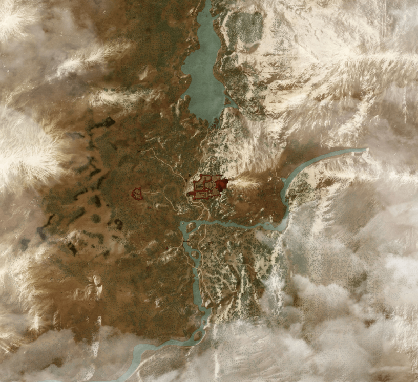

PL

Jest to jedno z głównych miejsc akcji serii i stanowi centrum polityczne i kulturalne królestwa Temerii.
W mieście znajdują się różne budynki, takie jak zamki, katedry, tawerny i sklepy, a także mieszka tam wiele różnorodnych postaci,
w tym kupcy, rzemieślnicy i członkowie arystokracji. W Wyzimie gracz może wykonywać misje, dokonywać zakupów i rozmawiać z innymi postaciami,
co pozwala mu na zdobywanie informacji i ulepszanie swoich umiejętności.

Jest to największe i najbogatsze miasto w świecie gry, a także ważne centrum handlu i polityki. W Novigradzie gracz może wykonywać misje,
dokonywać zakupów i rozmawiać z innymi postaciami, a także korzystać z usług takich jak jubiler, zaklinacz i inni.
Miasto jest również siedzibą wielu wpływowych organizacji, w tym kleru i zakonów, co dodaje dodatkowego wymiaru do jego politycznej i społecznej rzeczywistości.
W Novigradzie gracz może odkryć wiele tajemnic i sekretów, a także walczyć z różnymi przeciwnikami i podejmować trudne decyzje, które wpłyną na dalszy przebieg gry.

Miasto jest przedstawiane jako duże, zatłoczone i tętniące życiem, z dynamiczną sceną handlową i kulturalną.
Oxenfurt słynie z akademii wyższych uczelni i prestiżowych szkół magii, co przyciąga studentów i naukowców z całego świata.
Miasto posiada również żyjący port, który jest wykorzystywany przez handlarzy, podróżników i żeglarzy do handlu i transportu towarów do innych części świata.
W sumie, Oxenfurt jest przedstawiane jako zatłoczone i kosmopolityczne miasto, pełne życia, możliwości i emocji.

Jest on przedstawiany jako obszar wiejski, położony w Krajach Północnych, znany z wzgórz, gęstych lasów i malowniczych wioskach.
Mieszkańcy Białego Sadu zajmują się głównie rolnictwem, hodowlą zwierząt i rzemiosłem. Obszar jest również znany z pięknych winnic i produkcji wina.
W grze Wiedźmin 3: Dziki Gon, Biały Sad jest jednym z pierwszych miejsc, w których gracz odkrywa świat gry, a jego mieszkańcy stanowią ważną część rozgrywki,
udzielając wiedzy i zlecając misje. W sumie, Biały Sad jest uroczym i pełnym życia regionem, z dala od zgiełku miasta, ale również pełnym wyzwań i tajemnic.

Jest to siedziba gildii wiedźminów, znana z wykształcenia nowych wiedźminów i jako miejsce przechowywania niezwykle cennych artefaktów i sekretów dotyczących sztuki wiedźmińskiej.
Kaer Morhen jest uważane za jedno z najbardziej zacisznych i bezpiecznych miejsc na świecie, a jego mury chronią wiedźminów przed zagrożeniami z zewnątrz.
W grze Wiedźmin 3: Dziki Gon, Kaer Morhen odgrywa ważną rolę w fabule i jest głównym miejscem zakończenia gry. W sumie,
Kaer Morhen jest ważnym miejscem dla historii i kultury wiedźminów, a jego mury kryją wiele tajemnic i niebezpieczeństw.